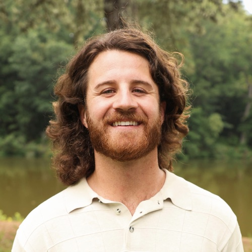

I was a fresh graduate from a Marriage and Family Therapy program in Tennessee when I moved back down to Georgia. Wide-eyed, ready to start my career and make a difference in this world. And finally get paid for it. But there was one thing: I had zero connections in the therapy world.
I went from a cohort of twelve who were with me every step to graduation, learning how to be therapists together, supporting each other, conceptualizing cases together. Then on graduation day, it all stopped. We all had to go our separate ways.
Me? I had to move out of state into new laws, new regulations, new systems, with no one there to guide me through the most ambiguous and confusing part of our profession: prelicensure. I was alone, confused, and stressed, all while trying to build a caseload.
I didn't know what step came before what. I struggled to find a supervisor. I was praying my forms were going to the board the right way. The waiting, the uncertainty, the fear of having to start over.
I don't even want to get into the financial side of it. It was a grueling season.
Somewhere in there, I learned that a therapist's main mode of community is Facebook groups. And there was no group for prelicensed therapists in Georgia. So I made one. The response, just from making it, was immediate and warm.
Then it hit me. Everyone in this stage was feeling exactly what I was feeling. The same struggle to find a good practice, the right supervisor, to get board submissions correct, to track hours, to not feel so alone.
Therapists serve people better when they're supported, connected, encouraged, and equipped with the right tools. There is a clear need for a therapist home. An official community where everyone gets it and everyone's verified. A place where you can conceptualize cases, refer to each other, and lift one another up. A platform built by therapists, made for therapists.
Let's stop trying to figure this out by ourselves and start linking arms. Join me in turning what can be the loneliest profession into the tightest-knit community there is.
StoneFounder, Cohort